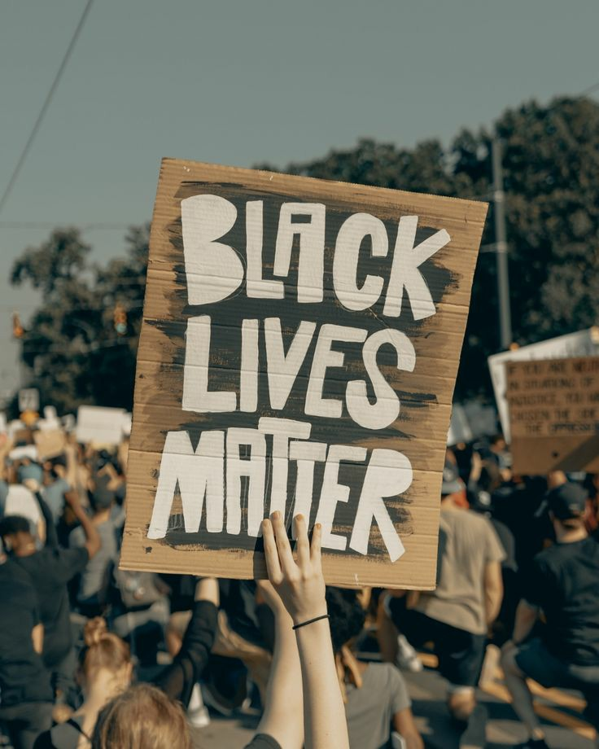

O movimento contra o racismo "Black lives matter" foi indicado ao prêmio Nobel da paz.
O movimento reúne milhares de pessoas que se unem para lutar contra a desigualdade racial, após a morte de George Froyd pelas mãos de um policial norte-americano branco o movimento ganhou projeção mundial.
Após o ocorrido o movimento se reuniu derrubando estátuas de comerciantes de escravos. Derek Chauvin foi culpado pelo ocorrido por unanimidade, a morte de George Froyd virou uma motivação para mostrar que as vidas negras importam e que o racismo não será aceito na sociedade atual.